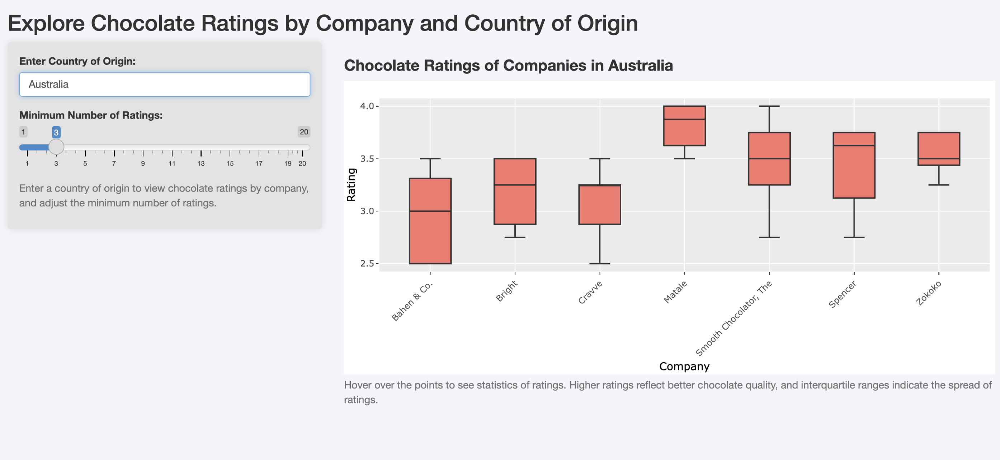

using-ChocoRatingPackage
using-ChocoRatingPackage.RmdIntroduction
This vignette demonstrates how to use the ChocoRatingPackage to explore chocolate ratings data and visualize it using a Shiny app.
Loading the Data
After installing and loading the package, you can access the
chocolate_rating dataset, which contains the cleaned
chocolate rating data:
library(ChocoRatingPackage)
# Load the dataset
data(chocolate_rating)
# View the first few rows of the dataset
head(chocolate_rating)
#> ref company_manufacturer company_location review_date country_of_bean_origin
#> 1 2454 5150 U.S.A. 2019 Tanzania
#> 2 2458 5150 U.S.A. 2019 Dominican Republic
#> 3 2454 5150 U.S.A. 2019 Madagascar
#> 4 2542 5150 U.S.A. 2021 Fiji
#> 5 2546 5150 U.S.A. 2021 Venezuela
#> 6 2546 5150 U.S.A. 2021 Uganda
#> specific_bean_origin_or_bar_name cocoa_percent ingredients
#> 1 Kokoa Kamili, batch 1 76 3- B,S,C
#> 2 Zorzal, batch 1 76 3- B,S,C
#> 3 Bejofo Estate, batch 1 76 3- B,S,C
#> 4 Matasawalevu, batch 1 68 3- B,S,C
#> 5 Sur del Lago, batch 1 72 3- B,S,C
#> 6 Semuliki Forest, batch 1 80 3- B,S,C
#> most_memorable_characteristics rating
#> 1 rich cocoa, fatty, bready 3.25
#> 2 cocoa, vegetal, savory 3.50
#> 3 cocoa, blackberry, full body 3.75
#> 4 chewy, off, rubbery 3.00
#> 5 fatty, earthy, moss, nutty,chalky 3.00
#> 6 mildly bitter, basic cocoa, fatty 3.25Using the explore_ratings Function
The explore_ratings() function launches an interactive
Shiny app to visualize chocolate ratings by company and country of
origin. Users can specify a country and set a minimum number of ratings
for companies included in the analysis.
Below is an example of the output generated by the
explore_ratings() function when viewing ratings for
companies in Australia:

Chocolate Ratings App Screenshot